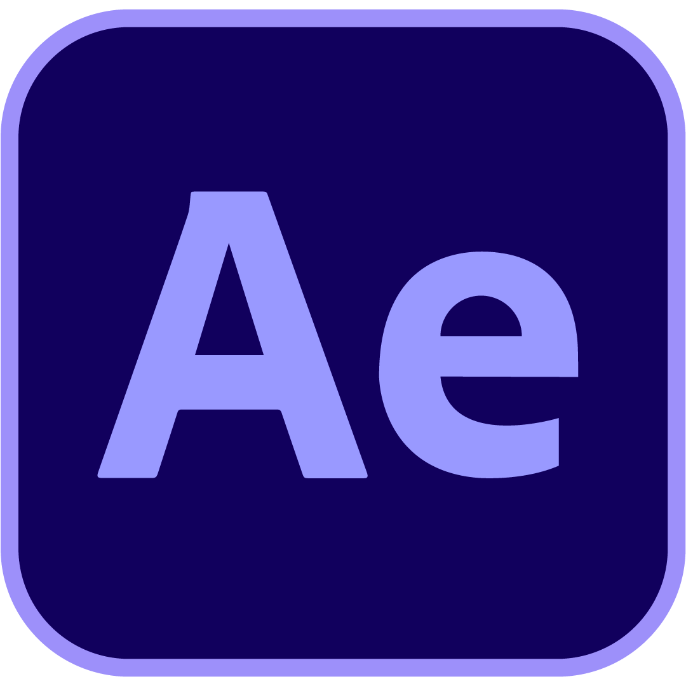
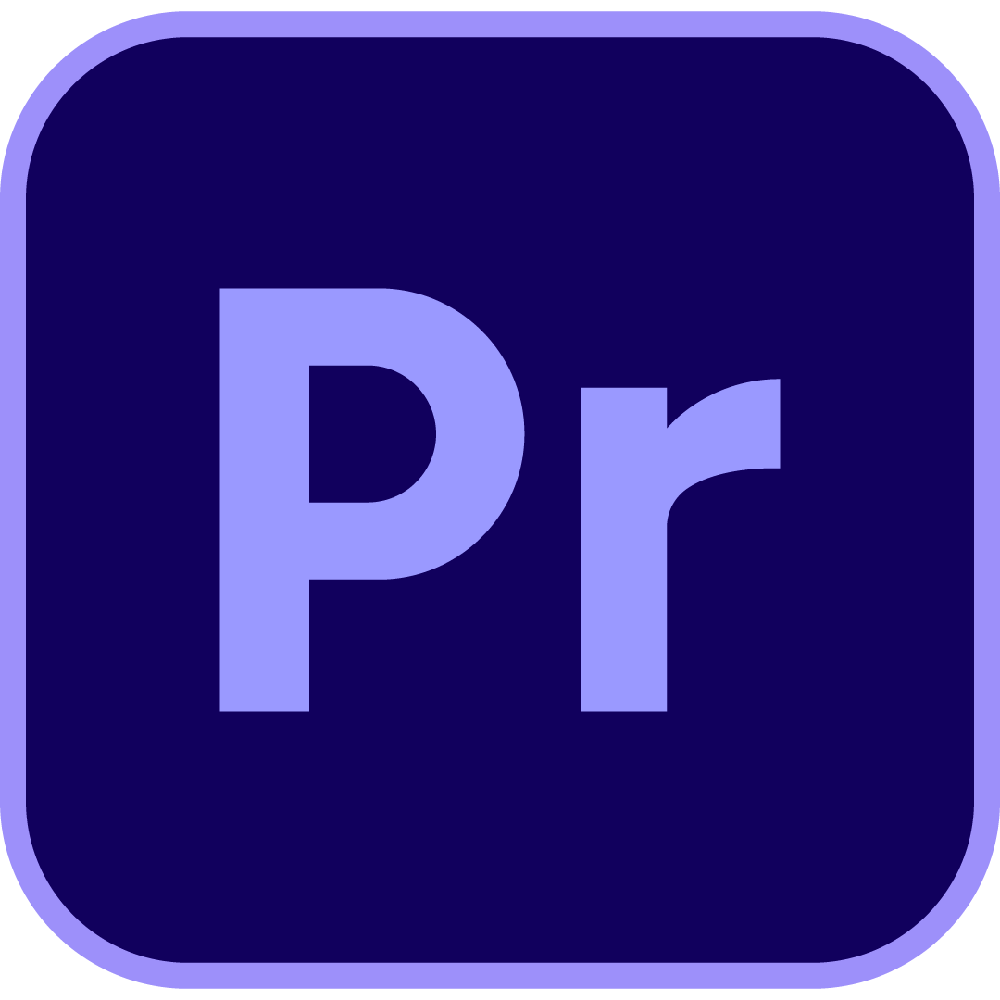

EcoJuy
Branding, diseño y contenido
Medio digital de periodismo ambiental para Jujuy. Branding completo, diseño de logo, identidad para redes y contenido periodístico. "Información y Conciencia Ambiental".
Ver proyecto →
Trabajo en comunicación institucional, producción audiovisual y motion graphics desde Jujuy, Argentina — y me muevo con la misma comodidad entre una pieza gráfica y una base de datos.
01 — servicios
Comunicación institucional, estrategia de redes, redacción SEO y copywriting, y planificación de contenidos. Del plan de comunicación al posteo publicado.
Identidad visual, piezas gráficas para pantalla y redes, motion graphics y edición audiovisual. Diseño que se mueve y comunica.
Análisis y visualización de datos, tableros interactivos y desarrollo web. Los números también cuentan historias.

After Effects
Premiere Pro02 — trabajo seleccionado
Branding, diseño y contenido
Medio digital de periodismo ambiental para Jujuy. Branding completo, diseño de logo, identidad para redes y contenido periodístico. "Información y Conciencia Ambiental".
Ver proyecto →
Diseño y visualización de datos
Proyecto de periodismo de datos sobre rutas nacionales argentinas, desarrollado en el FOCO Bootcamp (FTA + FOPEA). Diseño de visualizaciones y piezas gráficas del equipo.
Ver proyecto →
Desarrollo y visualización
Visualización interactiva de recursos de salud pública por departamento, desarrollada con Chart.js y JavaScript. De la base de datos cruda al gráfico navegable.
Ver proyecto →
Comunicación institucional y motion
Mi trabajo actual en el canal: identidad de temporada, banner animado del Mundial 2026, gráfica en pantalla y comunicación institucional. Una colección en crecimiento.
Ver colección →
Pasantía — producción, artística y streaming
Avatares y artística para las transmisiones de streaming del grupo de medios: Canal 7, AM 630, FM Trópico y Somos Jujuy. Identidad visual para el vivo.
Ver colección →
Estrategia y diseño
Plan de marketing digital para un emprendimiento gastronómico de Humahuaca, bajo la consultora estudiantil Criterio Digital. Estrategia, calendario de contenidos y diseño de piezas.
Ver proyecto →
Análisis de datos
Proceso completo de limpieza y análisis de un dataset de Spotify: secuencia de depuración estructurada, normalización de campos y documentación del proceso.
Ver proyecto →03 — quién soy
Soy comunicadora social en formación (FHyCS – UNJu), Analista Programadora Universitaria y técnica en informática. Trabajo en comunicación institucional y diseño en Canal 2 – Fiberway, y soy adscripta en la UNJu en los talleres de Producción Televisiva y de Producción del Texto Periodístico.
"Me muevo entre tecnología y ciencias sociales porque creo que la comunicación merece los dos."
Vengo del ecosistema de medios de Jujuy: pasé por el grupo Radio Visión Jujuy (Canal 7, AM 630, FM Trópico y Somos Jujuy), por UNJu Radio 92.9 y por la comunicación estratégica en Communis. Esa doble formación es mi diferencial: puedo diseñar la pieza, producir el contenido y también analizar los datos que dicen si funcionó. Hoy curso la Diplomatura en Gestión de Datos y la Tecnicatura en Comunicación Digital Convergente, mientras desarrollo mi tesis de Licenciatura.
04 — trayectoria
05 — hablemos
Si tenés un proyecto de comunicación, diseño o datos dando vueltas, escribime.